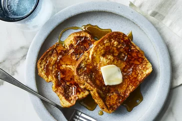

French Toast

Description
French toast is a classic breakfast dish loved for its rich and comforting
flavors. This recipe will guide you through creating delicious and fluffy
French toast that is perfect for starting your day off on a delightful
note. The bread slices are soaked in a mixture of eggs, milk, and warm
spices before being pan-fried to golden perfection. Serve it with a
drizzle of maple syrup or a dusting of powdered sugar for an extra touch
of sweetness.
Ingredients
- 4 slices of thick bread (such as brioche or challah)
- 4 large eggs
- 1/2 cup whole milk
- 1 teaspoon vanilla extract
- 1/2 teaspoon ground cinnamon
- 1/4 teaspoon ground nutmeg
- Pinch of salt
- Butter or vegetable oil, for frying
Steps
-
In a shallow bowl, whisk together the eggs, milk, vanilla extract,
ground cinnamon, ground nutmeg, and a pinch of salt until well combined.
-
Heat a large non-stick skillet or griddle over medium heat. Add a pat of
butter or a drizzle of vegetable oil and spread it evenly across the
surface to coat.
-
Dip one slice of bread into the egg mixture, allowing it to soak for a
few seconds on each side. Be sure to coat the bread thoroughly but not
to the point of saturation.
-
Place the soaked bread slice onto the heated skillet or griddle. Repeat
the process with the remaining bread slices, making sure not to
overcrowd the pan.
-
Cook the French toast for about 2-3 minutes on each side, or until
golden brown and crispy. Adjust the heat if necessary to prevent
burning.
-
Once cooked, transfer the French toast to a serving plate and cover with
foil to keep warm. Repeat the cooking process with the remaining slices
of bread.
-
Serve the French toast warm with your choice of toppings such as maple
syrup, powdered sugar, fresh fruits, or whipped cream.
-
Enjoy your homemade French toast and savor the delightful flavors!
Note: You can also add a touch of creativity to your
French toast by incorporating additional toppings like sliced bananas,
berries, chopped nuts, or a sprinkle of cinnamon sugar. Experiment with
different bread types to discover your personal favorite variation.